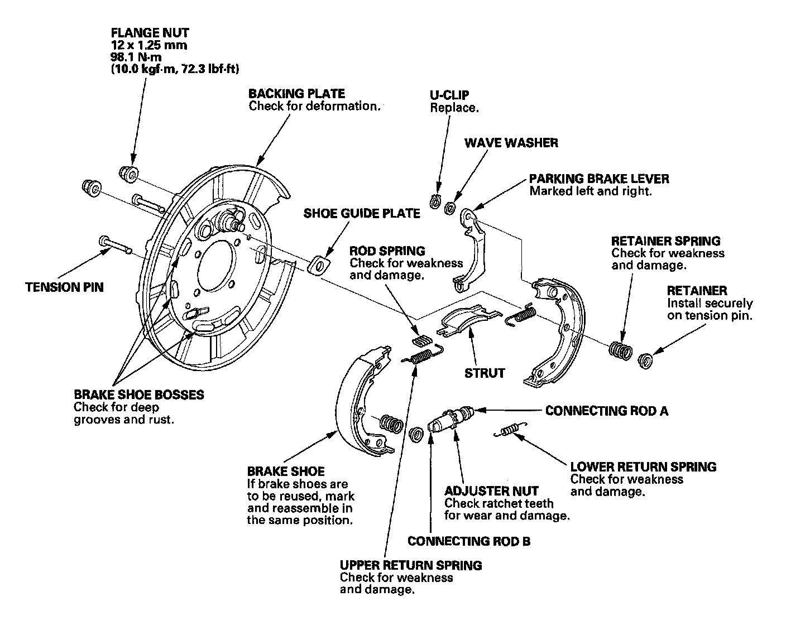

Parking Brake System: Testing and Inspection
Parking Brake InspectionCAUTION: Frequent inhalation of brake pad dust, regardless of material composition, could be hazardous to your health.
^ Avoid breathing dust particles.
^ Never use an air hose or brush to clean brake assemblies. Use an OSHA-approved vacuum cleaner.
1. Raise the rear of the vehicle, and support it with safety stands in the proper locations.
2. Remove the rear wheels.
3. Release the parking brake, and remove the following items:
^ Rear brake caliper bracket.
^ Rear brake disc/drum.

4. Check the parking brake linings (A) for cracking, glazing, wear, and contamination.
5. Measure the parking brake lining thickness (B). Measurement does not include brake shoe thickness.
Parking brake lining thickness:
Standard: 3.9 mm (0.15 in.)
Service limit: 1.0 mm (0.04 in.)
6. If the parking brake lining thickness is less than the service limit, replace all the parking brake shoes as a set.
7. Check the hub (C) for smooth operation. If it requires servicing, replace the hub bearing unit.
8. Measure the inside diameter of the parking brake drum with inside vernier calipers.
9. If the inside diameter of the parking brake drum is more than service limit, replace the brake disc/drum.
10. Check the parking brake disc/drum for scoring, grooves, and cracks.
11. Clean the mating surface of the brake disc/drum and the inside of the wheel, then install the rear wheels.